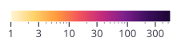

DROP SHAPES
29,124 drops, each normalised to the same depth and fall time
Each cell holds the drops of one steepness (rows) and one recovery rate
(columns). The white line is the cell's median drop.
Drops per cell

1
Typical dropV-shaped: falls and recovers at a similar rate
2
Stepfalls without recovering: 16% of drops
3
Spikesharp fall, immediate recovery
4
Wellsharp fall, rapid recovery
5
Empty regiongradual falls rarely recover quickly